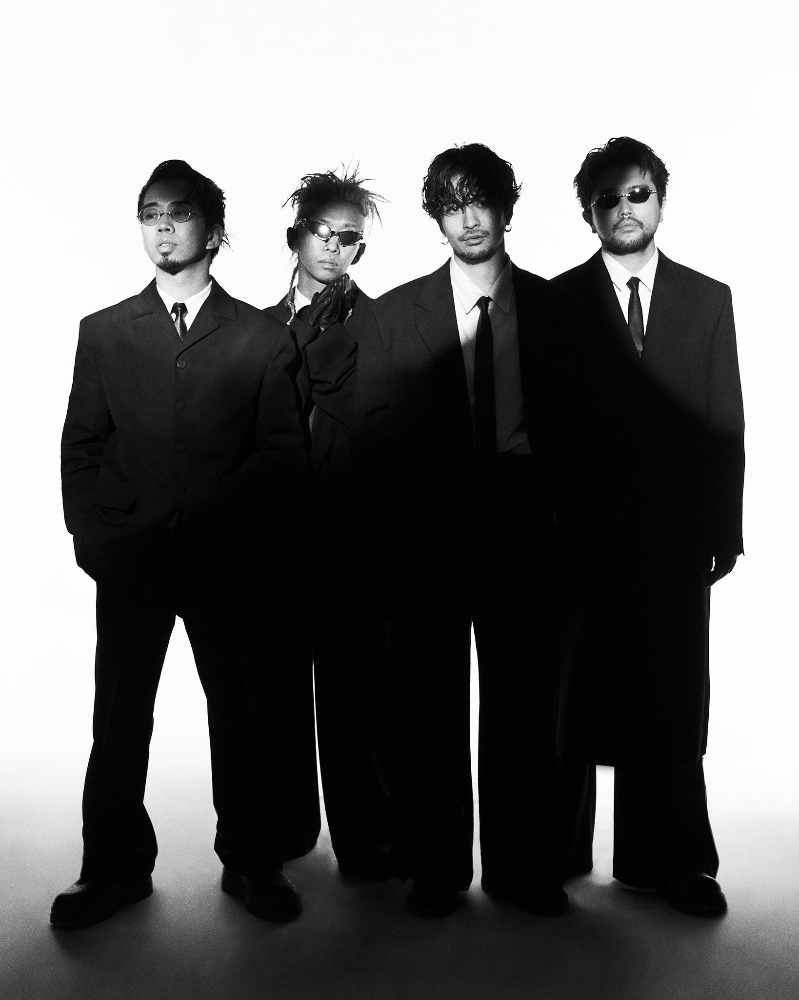
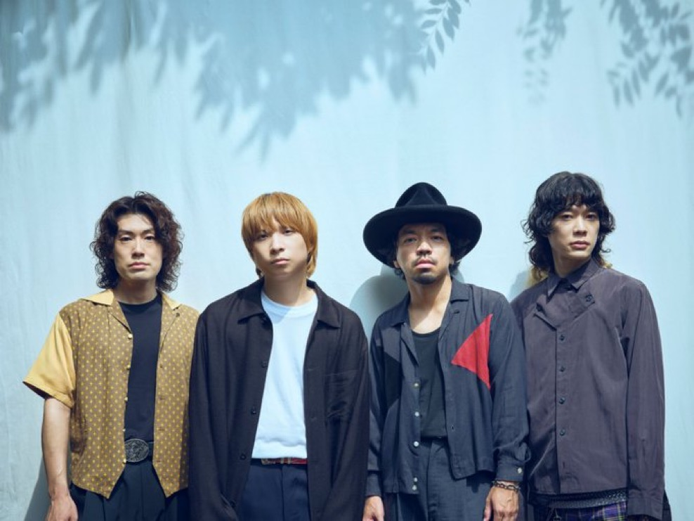

RECORD 01 / KING GNUKRECORD 01 / KING GNU
>>>>>>> e5dada576489e52202fa37e05b101ba4de843a2c
Side 02 / Favorite bands
何気ない日常に、いつも自分の気持ちに寄り添ってくれる、3組の音楽。

RECORD 01 / KING GNU言葉の奥行きと、感情を大きく揺らすメロディ。日常の景色を少し違って見せてくれるところが好きです。

RECORD 03 / CREEPHYP鋭くて生々しい言葉と、一度聴いたら忘れられない声。きれいごとだけではない感情に共感します。